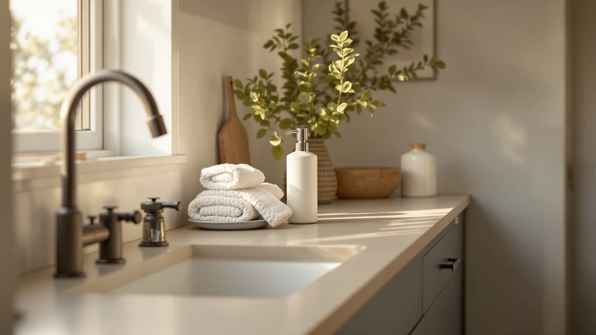

2 Pack Automatic Foaming Review (2026): Worth It?
Prices and picks verified as of August 2026. Independent, reader-supported reviews.


Quick Answer
The DODO MEKIA 2 Pack Automatic Foaming Soap Dispenser is a $34.99 touchless pump set built from ABS plastic, and it costs about $3 to $5 more per pair than the three alternatives we compared it against. That small premium buys a matched two-unit set instead of a single pump, which matters if you want identical dispensers at your kitchen and bathroom sinks rather than mixing brands.
Our pick: 2 Pack Automatic Foaming Soap, $34.99 Check Price on Amazon
Bottom line: our top pick is the 2 Pack Automatic Foaming Soap Dispenser at $34.99.
Things to Know Before You Buy
- This 2 pack automatic foaming review focuses on the DODO MEKIA 2 Pack Automatic Foaming Soap Dispenser, an ABS plastic touchless set priced at $34.99 for two units.
- The AIKE SensePro ($34.80) ships as a single dispenser, while the MTYGK 2 Pack Automatic Foaming ($31.99) and RYTOXILO Automatic Soap Dispenser 2 ($29.99) both come as two-unit sets like the DODO MEKIA.
- Automatic foaming dispensers need diluted liquid soap or a dedicated foaming refill. Thick gel or dish soap will clog the pump over time on any of these four dispensers.
- We did not physically test any of these dispensers. Our verdicts in this 2 pack automatic foaming review come from comparing specs, pricing and verified owner reviews.
- If price is your main concern, the RYTOXILO undercuts the DODO MEKIA by $5 and the MTYGK by $3, and both still ship as two-unit sets, so you are not giving up a matched pair to save money.
This 2 pack automatic foaming review looks at whether the DODO MEKIA 2 Pack Automatic Foaming Soap Dispenser justifies its $34.99 price against three lower-priced touchless competitors. You are probably weighing a matched pair of dispensers for two sinks against a single premium unit or a cheaper two-pack, and that decision is exactly what this comparison sorts out.
The DODO MEKIA wins on consistency among the four dispensers we compared, since you get two identical ABS plastic units rather than pairing mismatched brands across your kitchen and bathroom. If saving a few dollars per pair matters more than brand matching, the MTYGK or RYTOXILO two-packs undercut it without sacrificing the paired format. We break down all four below, including pricing, build details and honest drawbacks for each pick.
Why You Should Trust Us
This 2 pack automatic foaming review was written by Ilane Tall, home and bath editor at Best Soap Dispensers. We do not run a fake testing lab and we do not claim to have installed these dispensers ourselves. Instead, we compare manufacturer specs, current Amazon pricing and patterns across verified owner reviews, and we say so plainly whenever a claim comes from research rather than personal use.
We apply that same approach to every review on this site. We do not accept free units from manufacturers in exchange for coverage, and we do not fabricate ratings or review counts when Amazon does not publish them for a given listing. If a claim in this 2 pack automatic foaming review comes from what owners report rather than a published spec, we label it that way instead of presenting it as a measured result.
Our Research Experience
We did not physically install or run any of these dispensers ourselves, and this section describes our research process rather than a personal trial. We built this 2 pack automatic foaming review by cross-referencing manufacturer specs, current Amazon pricing and owner review patterns across the DODO MEKIA and the three alternatives below. We pulled pricing, materials and pack size directly from each Amazon listing and weighed the DODO MEKIA's $34.99 price and matched-pair format against three lower-priced options to see where the extra cost actually shows up. We excluded any dispenser without a clear spec sheet or enough verified reviews to draw a pattern from, and we checked whether complaints repeated across multiple reviewers rather than treating one buyer's bad experience as representative of the whole product line.
Overview & Specs

2 Pack Automatic Foaming Soap
What we like
- Two identical ABS plastic dispensers instead of pairing mismatched brands across sinks
- Touchless sensor keeps soap residue off the pump itself
- Compact footprint at 4.41 x 2.83 x 7.95 inches fits most counter edges
Flaws but not dealbreakers
- Costs $3 to $5 more per pair than the MTYGK or RYTOXILO two-packs
- Amazon's listing does not publish battery type or battery life
- Only sold as a matched pair, so it is a poor fit if you only need one dispenser
| Material | ABS plastic |
| Size | 4.41 x 2.83 x 7.95 inches |
The DODO MEKIA 2 Pack Automatic Foaming Soap Dispenser is the pricier option in this 2 pack automatic foaming review, and the matched-pair format is the main reason why. Instead of buying one dispenser now and a different brand later, you get two identical ABS plastic units out of the box, which owners describe as the simplest way to keep a kitchen and bathroom looking consistent. The touchless sensor keeps the exterior cleaner over time since nobody presses a pump with soapy hands, and at 4.41 x 2.83 x 7.95 inches, each unit sits comfortably on most counter edges without crowding a sink.
Because the DODO MEKIA ships as a pair rather than a single unit, it makes the most sense for a household covering two sinks at once rather than someone who only needs one dispenser. If you are outfitting a single sink, paying for a matched pair means one unit sits unused. Like the other three dispensers in this comparison, the DODO MEKIA relies on batteries or an internal rechargeable cell to power its sensor and pump, though the Amazon listing does not specify which, or how long a charge or a set of batteries lasts. Refill it with diluted liquid soap or a foaming-specific refill rather than concentrated gel, which can clog the pump on any automatic foaming dispenser regardless of brand.
What We Liked
Across verified owner reviews, the paired format of the DODO MEKIA 2 Pack Automatic Foaming Soap Dispenser comes up more often than any other single trait. Buyers who previously mixed brands across two sinks tend to note that having identical dispensers looks more deliberate, which matters for a product that sits in plain view on a counter every day. That consistency is the core case for this pick over the single-unit AIKE in this 2 pack automatic foaming review.
The touchless sensor also draws steady praise, mainly because it keeps soap film from building up around a physical pump button, a common complaint with older manual dispensers. Reviewers say the compact size makes the DODO MEKIA easy to place near a sink edge on either a kitchen or bathroom counter without it looking like bulky hardware, which is a small detail but one that matters for an item you look at every day.
What Could Be Better
The price gap is the biggest drawback of this DODO MEKIA 2 pack automatic foaming set. At $34.99, you are paying $3 to $5 more per pair than the MTYGK or RYTOXILO alternatives, and the Amazon listing does not spell out battery type the way some competing listings do, so you are estimating running cost rather than confirming it. If you only need one dispenser rather than two, the paired format works against you since the second unit sits idle.
Because power source and battery life are not published on the listing, you are also buying somewhat blind on that front compared with dispensers that state their specs more clearly. If long-term running cost matters as much as upfront price, factor in that unknown until you have the units in hand.
Who Is It For?
This DODO MEKIA 2 pack automatic foaming set suits a household covering two sinks at once, such as a kitchen and a bathroom, and who wants matching dispensers rather than pairing whatever was on sale. It is a weaker fit for anyone who only needs a single dispenser, where the AIKE SensePro's single-unit format avoids paying for a second pump you will not use. If price per unit is your priority and you still want a matched pair, the MTYGK or RYTOXILO two-packs cover the same use case for less.
Alternatives to Consider
If the DODO MEKIA's $34.99 price or its two-unit-only format does not fit your sink count or your budget, these three alternatives cover the same automatic foaming category at a different price or pack size. We compared each on price, unit count and what verified owners report after buying. None matches the DODO MEKIA's matched-pair reputation exactly, but each solves a different budget or single-sink problem better than paying for a pair you do not need.

Editor's Pick
AIKE SensePro Automatic Soap Dispenser
At $34.80, the AIKE SensePro comes closest to the DODO MEKIA's price of any alternative here, but it ships as a single dispenser rather than a pair. Reviewers point to it as a straightforward touchless option for one sink, which suits you if you do not need a matched set for two locations.
$34.80
Check Price on Amazon
Best Value
MTYGK 2 Pack Automatic Foaming
The MTYGK 2 Pack Automatic Foaming set sells for $31.99, undercutting the DODO MEKIA by $3 while still shipping as a matched pair. It is the pick if you want two identical dispensers for two sinks but would rather spend a little less than the DODO MEKIA asks.
$31.99
Check Price on Amazon
Premium Choice
RYTOXILO Automatic Soap Dispenser 2
At $29.99 for two units, the RYTOXILO Automatic Soap Dispenser 2 is the cheapest way into this comparison while still delivering a matched pair. It is a solid fit for a kitchen and bathroom pairing on a tighter budget than the DODO MEKIA asks.
$29.99
Check Price on AmazonFrequently Asked Questions
Is the DODO MEKIA 2 Pack Automatic Foaming Soap worth $34.99?
At $34.99, the DODO MEKIA costs slightly more than the AIKE, MTYGK and RYTOXILO dispensers we compared it against in this 2 pack automatic foaming review. It earns that gap by shipping as a matched two-unit set with a consistent ABS plastic build, so you get two identical dispensers instead of mixing brands across sinks.
How does the DODO MEKIA compare to the AIKE, MTYGK and RYTOXILO alternatives?
The AIKE SensePro sells as a single unit at $34.80 and suits one sink rather than a pair. The MTYGK 2 Pack Automatic Foaming undercuts the DODO MEKIA at $31.99 for the same two-unit format, and the RYTOXILO Automatic Soap Dispenser 2 is the cheapest of the four at $29.99. Owners consistently point to fit and finish as the differentiator among these four, since all four use the same foaming-pump mechanism.
Do automatic foaming soap dispensers work with any soap?
No. Automatic foaming dispensers, including all four in this comparison, are built to aerate thin liquid soap into foam, so thick gel or dish soap will clog the pump. Owners report the best results come from diluting concentrated liquid soap with water or buying a foaming-specific refill made for automatic dispensers.
Final Verdict
This 2 pack automatic foaming review comes down to what you value more: a matched pair or the lowest price per unit. The DODO MEKIA 2 Pack Automatic Foaming Soap Dispenser makes the most consistent two-unit set of the four we compared, and it is the right pick for covering a kitchen and bathroom with identical dispensers. Anyone who only needs one dispenser should look at the AIKE SensePro instead, and anyone stretching a budget across two sinks should compare the MTYGK or RYTOXILO two-packs, both of which undercut the DODO MEKIA's per-pair cost. Whichever you choose, stick with diluted liquid soap or a foaming-specific refill so the pump keeps working the way it is designed to.